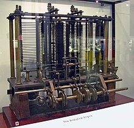

Hardware
Para comenzar debemos antes enter que es un hardware: se refiere a los componentes físicos de la computadora, como el procesador, la memoria RAM, el disco duro y la placa base. Cuando aún no se habían inventado los sistemas numéricos escritos, los humanos contaban las cosas con lo único que tenían al alcance: los dedos de sus manos. Y para números mayores, utilizaban ramas, piedras o semillas para indicar la cantidad. Antes de que nacieran los sistemas de numeración se utilizaban dispositivos para contar, como el ábaco, este dispositivo es muy sencillo, consta de cuentas ensartadas en varillas que a su vez están montadas en un marco rectangular:

En el momento en el que las Matemáticas se volvieron mucho más complejas, surgió la necesidad de crear dispositivos que hicieran esos cálculos automáticamente, de una manera más rápida y eficiente. La ENIAC se ha considerado, históricamente, como la primera computadora de propósito general, aunque el título le pertenece en realidad a la computadora alemana Z1. Además guarda una estrecha relación con la computadora COLOSSUS, que se usó para descifrar mensajes en código de los alemanes, generados por la máquina ENIGMA durante la Segunda Guerra Mundial.
Primera mujer en la historia del Hardware
Ada Lovelace
Augusta Ada King, condesa de Lovelace (Londres, 10 de diciembre de 1815-27 de noviembre de 1852), registrada al nacer como Augusta Ada Byron y conocida habitualmente como Ada Lovelace, fue una matemática y escritora británica, célebre sobre todo por su trabajo acerca de la computadora mecánica de uso general de Charles Babbage,
Fue la primera en reconocer que la máquina tenía aplicaciones más allá del cálculo puro y en haber publicado lo que se reconoce hoy como el primer algoritmo destinado a ser procesado por una máquina, por lo que se le considera como la primera programadora de ordenadores. Dedujo y previó la capacidad de los ordenadores para ir más allá de los simples cálculos de números, mientras que otros, incluido el propio Babbage, se centraron únicamente en estas capacidades. En 1841, Ada escribe a Babbage una carta dejando claro que está interesada en colaborar con él. A Babbage le pareció bien la idea, así ella empezó traduciendo el artículo del científico italiano, Luigi Federico Menabrea. Con la traducción del texto ella tenía dos objetivos: dar a conocer el valioso trabajo de su amigo y cumplir su sueño de alcanzar una vida intelectual que la elevase por encima de las exigencias de la maternidad y el matrimonio. Finalmente llamó a su trabajo Notas, que consistía en su propio estudio sobre la máquina analítica, y como anexo, la traducción del artículo del italiano. Babbage la asesoró, pero Ada fue enteramente la autora de ese trabajo. Ada dedica gran parte de su estudio a describir con un lenguaje muy técnico cómo funcionaría la máquina analítica, pero también ofrece una serie de observaciones que dejan clara su aportación teórica. Ella distinguía con claridad entre datos y procesamiento; este pensamiento era revolucionario en su tiempo. Ada aspiraba a crear la informática, que ella llamaba la ciencia de las operaciones. Se dio cuenta de las aplicaciones prácticas de la máquina analítica y llegó incluso a vislumbrar la posibilidad de digitalizar la música. Ada tenía una idea clara: la máquina analítica y el telar de Jacquard vienen a hacer lo mismo. Una frase clave donde se expresa esto es: «Puede decirse que la primera teje dibujos algebraicos, del mismo modo que el telar de Jacquard teje flores y hojas». Ada expresa con claridad las tres funciones que podía cumplir el invento de Babbage: procesar fórmulas matemáticas expresadas con símbolos, hacer cálculos numéricos (su objetivo primordial) y dar resultados algebraicos en notación literal. Babbage y Ada concebían la máquina analítica de manera muy distinta. Al primero no le interesaban demasiado sus consecuencias prácticas. A Ada, por el contrario, le obsesionaban las aplicaciones del invento. Ella fue la primera en intuir lo que el invento de Babbage significaba para el progreso tecnológico. Entendió que la tecnología utilizada en el telar de Jacquard y en la máquina analítica podía aplicarse a todo proceso que implicara tratar datos: de este modo abría camino a una nueva ciencia, la de la computación de la información.